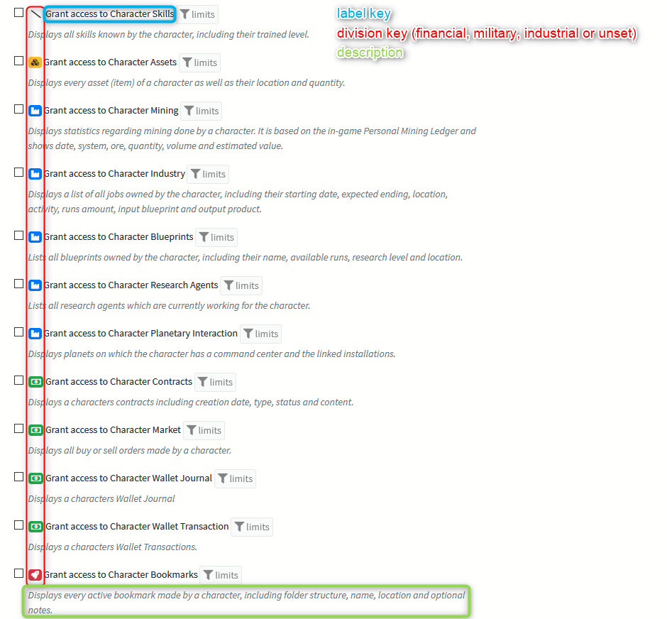

Developers Guides - Package Development¶
Introduction¶
So, you want to write a SeAT package? Hopefully this guide helps you along the way! This guide was written while writing the API package for SeAT here. I figured it would be best to try and capture the process to help in case I miss any important details.
Be sure to also have a look at the Development Tips page!
Background notes¶
I think its important to keep in mind a few things about how SeAT is put together. The most important being a brief description of what each core package offers, and how you can integrate with them. For a breakdown on what the core packages provide, please refer the to [breakdown].
SeAT 4 is written on Laravel 6, while SeAT 5 uses Laravel 10. A very good thing to do would be to actually read the documentation top->bottom and get an idea of what is possible with the framework. SeAT core packages make heavy use of many of the features, based directly of what has been interpreted by this very documentation.
If you really want to start contributing packages, but just cant get your head around this whole Laravel thing, then I can suggest you have a look at this excellent free course material covering the basics of what you will encounter in the SeAT codebase. https://laracasts.com/series/laravel-6-from-scratch
Other plugins and the SeAT core are also a good learning resource.
Getting started¶
The very first thing to do is prepare the empty git repository on say Github, as well as the composer package itself. Clone a clean repository, and run composer init, answering any questions. Once that is done, edit the resultant composer.json and prepare the autoload block. SeAT core follows the PSR-4 autoloading standard. I will suggest you do the same. For some more detailed composer info, refer to the docs here. For the API package, I am going to autoload Seat\Api from the src directory using PSR-4.
Service provider¶
As mentioned in the package breakdowns, the eveseat/seat repository bootstraps packages via service providers or package discovery. This is actually a Laravel convention that SeAT just follows. To get our package ready, we need to create a service provider. For the API package, I create an ApiServiceProvider class in src/ directory which extends Seat\Services\AbstractSeatPlugin. Our packages file structure now looks as follows:
Hint
The AbstractSeatPlugin class is extending Laravel ServiceProvider class and ship you with useful methods that help to register your plugin in the stack (including version discovery, permissions registration, etc...).
You must use it rather than the standard one, especially if you want permissions and get your packages in Settings > SeAT Settings > SeAT Module Versions pane.
Package structure¶
From here you pretty much free to do what you want. How you structure the package will obviously depend on what exactly your package provides. In principle, I prefer to follow the same package structure as Laravel does for web / console features. Since we are going to be providing web features with the API, we will quickly create a few folders in preparation for this. I know beforehand that we are going to need a model to store API tokens; middleware to authenticate API requests; routes and controllers for the actual api logic (preferably making use of the eveapi/services repository classes for data access) as well as a few web views for administrators to generate API tokens for applications. With that in mind, the initial structure looks as follows:
This will obviously change as we progress building the package.
Routes and controllers¶
To start testing the API, we need to add a route and controller to process some requests and responses. My routes.php file will have a global Route::group() to encapsulate the routes in the Seat\Api namespace as well as prefix them with api/.
See the final product here for a more complete example.
Next, I add some logic with a route to /, update the base frameworks composer.json to autoload the Seat\Api namespace from the directory where my package lives, run composer dump-autoload and add the service provider to the eveseat/seat repositories app.php providers array. Lastly, I add a method to the service provider to load the routes and call it form the boot() method in the generated stub.
See the complete service provider here
As a final test, I check that my route is accessible from a booted SeAT app. :)
Routes¶
Access Control¶
Obviously, some routes are not for everyone's eyes. SeAT comes with middleware that can be used to filter out requests that may not be authorized for your route. As can be seen in the example below (from here), we are filtering out requests to api-admin for only superusers.
I suggest you have a look at the eveseat/web packages routes definitions for more examples on how the middleware is used. https://github.com/eveseat/web/tree/master/src/Http/Routes
It is recommended that you scope the route name defined in 'as' => 'seatcore::api-admin.list'. For example all routes from the seat core start with seatcore like this: seatcore::my.route.to.someting. You should follow a similar format: seat<plugin name>::<route>
Middleware¶
To auth our API requests, we are going to go with token based authentication for now. We want users to present us with a X-Token header (from a valid allowed src IP address) before they may proceed with their request. To do this, we will filter requests using middleware. Thankfully, again, Laravel comes with a command to stub us some empty middleware. Run php artisan make:middleware ApiToken and copy it to your projects Middleware folder. Next we should register the middleware in our service provider. I do this by adding a method and calling it in boot().
See the complete middleware here
Views¶
Although almost all of our interfacing with this package will be via the json api endpoints, we need to add a few routes that will give an administrator the ability to generate API tokens as well as view logs etc. This will be for an administrator, so we will re-use the ACL features provided by the eveseat/web package to ensure that only admins an access our api-admin routes. Views live in resources/views and are bootstrapped to the api namespace in the service provider. See the service provider here for an example.
Note how we are re-using views that exist in the web namespace. All we have to do is extend one of the grids like here and start without our blade template.
Sidebar menu¶
Integrating with the sidebar is also really easy. All you have to do is create a config file, bootstrap it in the service provider and viola. The config file itself has a set structure for the web package to interpret and can be seen here.
The format is generally an array, whereby the first key is the name of your package (api in this case). Thereafter you can specify the main entry, and any sub entries you want to add. The route key should refer to the named route. The sidebar loader will resolve the route itself for you. If you have any permissions requirements for your package, the permission key can be used together with a required SeAT permission to render the view.
Character submenus¶
Integrating with the character sub menus is also really easy. Just like the sidebar, all you have to do is create a config file, bootstrap it in the service provider and viola. The namespace should be named package.character.menu in your service provider. A sample config file can be seen below:
Corporation submenus¶
Integrating with the corporation sub menus is also really easy. Just like the sidebar and character menus, all you have to do is create a config file, bootstrap it in the service provider and viola. The namespace should be named package.corporation.menu in your service provider. A sample config file can be seen below:
Bootstrapping menu items¶
In the above items, we refer to the files needing to be bootstrapped via the service provider. All this really means is that we have to tell the Laravel application where to find configuration information for a namespace. So, if we wanted to add a sidebar item, we would add the following line to the register() method of the service provider:
The first argument is the file with the sidebar definitions, the second is the namespace.
Permissions¶
You are able to register and use your own permissions for use within SeAT. This is relatively simple and done by creating a config file in the location Config/Permissions/package.permissions.php. It should return an array of the following format:
| property | mandatory | purpose |
|---|---|---|
| label | yes | The displayed name of your permission. It must be a translation token. |
| description | The displayed permission description. It should help user to determine what the permission is doing. It must be a translation token. | |
| division | It will show a "category" icon to help user figures what will be impacted by the permission. Value can be one of military, assets, financial, industrial. |
|
| gate | If you need to manage your permission with a custom policy, you can provide a policy FQCN. |
The definition key (sheet, intel, planetary in the upper sample) will be used as permission unique identifier by the system. This is the one stored in the database, together with scope.

Info
By default, if no gate are provided, those shipped in core will be used according to this pattern :
- character scope: CharacterPolicy, this will require an instance of CharacterInfo to be used in your checks
- corporation scope: CorporationPolicy, this will require an instance of CorporationInfo to be used in your checks
- anything else: GlobalPolicy
You'll find policy sample at this location.
In SeAT 4, a permission is made of a scope and an ability. The ability is defined by the permissions configuration file and the scope is defined on registration.
This config file is then loaded from your app service provider as below:
Database¶
For our API package, we have a database requirement. We need to store api tokens and the ip address that is allowed to use them. We are also going to store an access log (based on the config setting). We create migrations and models just like you would for a base Laravel 6 application. The only thing to remember is that your migrations for your package must be published (and specified in your service provider).
Registering these migrations looks like the following:
Jobs & Schedules¶
Many packages need to run certain actions in a regular interval. For example, a mining tax plugin might want to calculate taxes once a day. This can be done with the job queue and the schedule system.
First, create your job containing the logic you want to run on a schedule. You can refer to the laravel docs for this.
Next, create an artisan command that launches your job. Again, you can refer to the laravel docs for this.
In a last step, we create a database seeder that adds your command to the schedule. In your database/seeders/ directory, create a class that extends from \Seat\Services\Seeding\AbstractScheduleSeeder.
The required getSchedules() function should return an array describing the command you wish to schedule, according to the following format:
public function getSchedules(): array
{
return [
[
'command' => 'horizon:snapshot', // your artisan command
'expression' => '*/5 * * * *', // this is a cron expression describing how often your command should be run
'allow_overlap' => false,
'allow_maintenance' => false,
'ping_before' => null,
'ping_after' => null,
],
[
'command' => 'other:command',
'expression' => '*/5 * * * *',
'allow_overlap' => false,
'allow_maintenance' => false,
'ping_before' => null,
'ping_after' => null,
],
];
}
You can let the getDeprecatedSchedules() function return an empty array for now.
Lastly, register your seeder in your service provider's register() method using
When you restart the stack, the seeder should add the command to the schedule. For testing, it might also be useful to run the seeder manually using
`
php artisan db:seed --class=Seat\\Services\\Database\\Seeders\\PluginDatabaseSeeder
Releasing the plugin¶
The usual setup is to host the code on github and distribute the code via packagist.
When you submit your plugin on packagist, it will be installable like the other plugins by adding <vendor>/<package> to the appropriate section of your .env file.